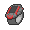

관동 체육관
배치한 동료로 순서대로 도전해요. 야생 배틀 중 누르면 배틀이 끝난 뒤 시작해요.
관장 목록
TEAM ROCKET HIDEOUT로켓단의 아지트

로켓단의 아지트
A BLOCKED ROAD길을 막는 잠만보
연분홍시티로 향하는 길목에 잠만보가 깊이 잠들어 있어요. 아무리 불러도 일어나지 않네요. 깨울 방법을 찾아야겠어요.
사천왕, 그리고 챔피언
뱃지 8개를 모으면 도전할 수 있어요. 다섯 경기를 회복 없이 이어서 승리하면 출현 보너스를 얻고, 2세대 해금을 직접 선택할 수 있어요.
다음 모험을 선택하세요
특별한 만남
| 포켓몬 | 추가 확률 | 현재 출현 확률 |
|---|
보유 물품
학습장치

학습장치를 얻으면 사용할 수 있어요.
출전 동료의 경험치는 그대로 · 등록한 한 마리에게만 추가 10%. 교환 진화 대상은 그 모습에서 장치로 한 레벨 오르면 자동 진화해요.
키우미집에 전화하기

가방 속 전화기로 키우미에게 연락해요. 맡길 두 동료를 골라 부탁하면 키우미집에서 돌봐 줘요. 맡긴 동료들은 잠시 배틀을 쉬어요.
한 번 맡길 때 알 하나를 얻어요. 모험 걸음은 실제 Codex 작업량에 따라 쌓여요.
코딩하는 동안 알을 발견하고, 부화하면 동료 목록에 자동으로 들어와요.
부모는 그대로 돌아오고, 부화한 포켓몬은 Lv.5부터 따로 자라요. 키우미집에서는 부모의 경험치가 오르지 않아요.
네가 코딩하는 동안
새로운 만남, 포획, 성장과 도전의 결과를 모아 뒀어.
기억에 남는 순간
최근 모험과 배틀의 기술·특성·상태이상 기록이에요. 오래된 상세 기록이 지나가도 요약 수치는 남아요.
Codex 원격 연동
다른 PC에서 코딩해도 이 PC의 동료들이 함께 모험해요. 로컬 사용량은 계속 자동으로 반영돼요.
작업 시작·종료, 숫자 사용량·한도만 SSH로 받아요. 대화 본문·명령 내용·Codex 인증정보는 전송하지 않아요. 처음 연결하기 전 기록은 경험치로 가져오지 않으며, 재연결 시 확인한 기록의 증가분만 한 번 반영해요.